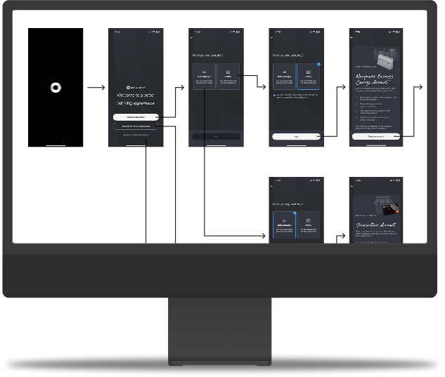

Case Study
mBANKING:
APP MAP
Creating clarity at scale to reduce product risk

Case Study
Creating clarity at scale to reduce product risk

In a sentence
At Macquarie Bank, I identified that design and product teams were making decisions about the mobile banking app without a shared, reliable view of what actually existed in production.
Rather than treating it as a documentation problem, I framed it as a product risk. I self-initiated and led the creation of a comprehensive app map, a living view of the entire live experience, spanning 2,730 screens across the full mobile banking product.
The result shifted team conversations from "What exists today?" to "What should we improve next?", enabling safer, faster, more confident product decisions at scale.
Chapter One
A self-initiated diagnosis of a risk hiding in plain sight
The observation
While working on Macquarie's mobile banking app, I noticed teams lacked a shared understanding of what actually existed in production.
Designers, product managers, and engineers were working from partial knowledge, outdated files, or assumptions. With thousands of screens and years of iteration behind the app, this created hidden risk and slowed decision-making.
Before improving the experience, teams first needed clarity. But no one had framed it that way. Not yet.
The reframe
Without a reliable view of the current app, the organisation was limited in its ability to evolve the product confidently.
My position
Senior Product Designer. I initiated and led this work independently, partnering closely with UX, UI, and Engineering leadership across 29 alignment meetings.
Rather than treating this as a documentation task, I framed it as a product problem: reducing uncertainty so teams could make better decisions at scale. This reframing changed how leadership engaged with the work and ensured it received the attention it warranted.
Chapter Two
How I designed a shared source of truth for 2,730 screens
The core insight
Teams couldn't confidently answer the most fundamental questions about the product they were building on:
What screens exist in production today?
Where are patterns reused or fragmented?
What would break if we changed this?
Clarity had to come before improvement.
The work
I led the creation of a comprehensive mobile app map documenting the live production experience, every screen, state, and interaction across the entire banking app.
The goal wasn't to prescribe solutions, but to create a shared source of truth that made the app understandable at a glance and supported safer product decisions across teams.
This level of coverage ensured teams could rely on the map as a true source of truth, not a partial or aspirational view, but an accurate picture of what actually lived in production.
Design craft
Chapter Three
Measurable shifts in team behaviour, alignment, and confidence
Heard from the team
Teams used it to:
The app map quickly became a reference point across design and product teams.
Sooo useful! This made it very easy for me to quickly identify problem areas for our squad.
Seeing everything mapped made it way easier to understand what would break before we changed anything.
Having the app map meant we could agree on scope early instead of figuring it out halfway through.
What changed
While internal-facing, this work directly enabled higher-quality customer outcomes by removing uncertainty upstream, before it became friction in the experience.
Established a single source of truth for Macquarie's mobile app
Reduced risk when evolving core journeys
Improved alignment across design, product, and engineering
Enabled more confident planning and prioritisation
Created a foundation for future mobile improvements
Looking back
This project reinforced a set of principles I now carry into every engagement.
Reducing ambiguity can be higher impact than shipping features
Internal clarity is often a prerequisite for customer-facing quality
Senior designers create value by enabling better decisions, not just better screens
Forward thinking
With more ownership, the map evolves from an artefact into a living product planning tool.
Case Study